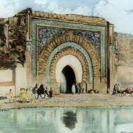

L'homme a laissé de nombreuses traces au cours de toute la période préhistorique, marque d'un peuplement très ancien, sans doute facilité par un climat plus favorable qu'aujourd'hui4,5. À l'Acheuléen (Paléolithique inférieur), des indices datant d'au moins 700 000 ans traduisent une première activité humaine. Ces hommes vivaient principalement de la cueillette et de la chasse. Les outils de cette époque sont les galets aménagés, le biface, les hachereaux découverts notamment dans les régions de Casablanca et de Salé. Découverte en 1999 de la statuette de la Vénus de Tan-Tan.
Ces populations se maintiennent jusque vers 9 000 ans av. J.-C. puis elles sont éliminées ou absorbées par l'arrivée des premiers ancêtres des populations berbères actuelles : les capsiens (nom issu de la ville antique de Capsa,
À partir du ive siècle av. J.-C. apparaît dans le nord-ouest du Maroc actuel la première organisation politique du pays : le royaume de Maurétanie
Lien Lien2 Aller à google | Casablanca | Rabat | Tanger |
| الدارالبيضاء | الرباط | طنجة |
| Ville | Dimographie |
|---|---|
| Casablanca | 3 566 020 |
| Rabat | 645 500 |
| Tanger | 1 453 462 |